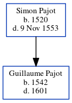

Guillaume Pajot 1542 - 1601
[ Home ] | [ Calendar ] | [ Surnames Index ] | [ Census Index ] | [ Family History ]The child of Simon Pajot, Guillaume Pajot, the thirteen times great-uncle of Michele Copp (née Phillips), was born in Paris, Paris, Ile-De-France, France in 15421.
He died in Paris in 16011.
Parents
- Simon was born in 1520
Citations
- Web: Netherlands, GenealogieOnline Trees Index, 1000-2015 Ancestry.com Operations, Inc.
Family Tree
Generated by ged2site. Last updated on Jun 6, 2024